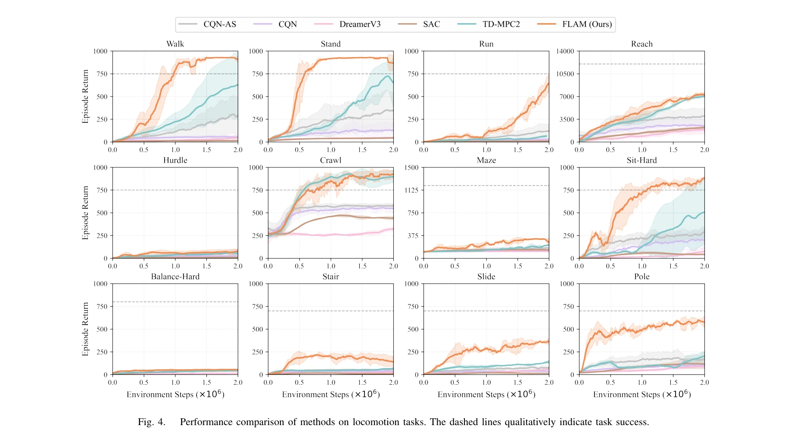
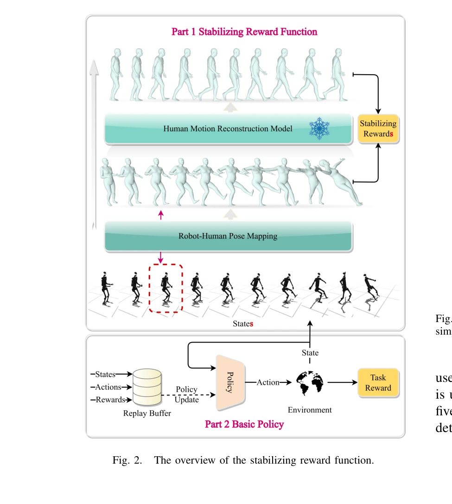

Essence

Fig. 1.
FLAM은 인간 동작 재구성 모델 기반의 안정화 보상 함수를 설계하여 휴머노이드 로봇의 전신 제어에서 신체 안정성을 명시적으로 고려하는 강화학습 방법이다. 로봇 자세를 3D 가상 인간 모델에 매핑한 후 안정화된 자세를 재구성하여 보상을 계산함으로써 학습 과정을 가속화한다.
저자: Xianqi Zhang, Hongliang Wei, Wenrui Wang, Xingtao Wang, Xiaopeng Fan, Debin Zhao | 날짜: 2025-03-28 | URL: https://arxiv.org/abs/2503.22249
Fig. 1.
FLAM은 인간 동작 재구성 모델 기반의 안정화 보상 함수를 설계하여 휴머노이드 로봇의 전신 제어에서 신체 안정성을 명시적으로 고려하는 강화학습 방법이다. 로봇 자세를 3D 가상 인간 모델에 매핑한 후 안정화된 자세를 재구성하여 보상을 계산함으로써 학습 과정을 가속화한다.

Fig. 4.

Fig. 2.
총평: FLAM은 인간 동작 foundation model을 창의적으로 활용하여 휴머노이드 로봇의 안정성 문제를 해결한 효과적인 방법이다. 강화학습의 샘플 효율성 문제를 개선하고 다양한 작업에서 우수한 성능을 보여주며, 향후 로봇 제어의 중요한 기초를 제공할 수 있다.